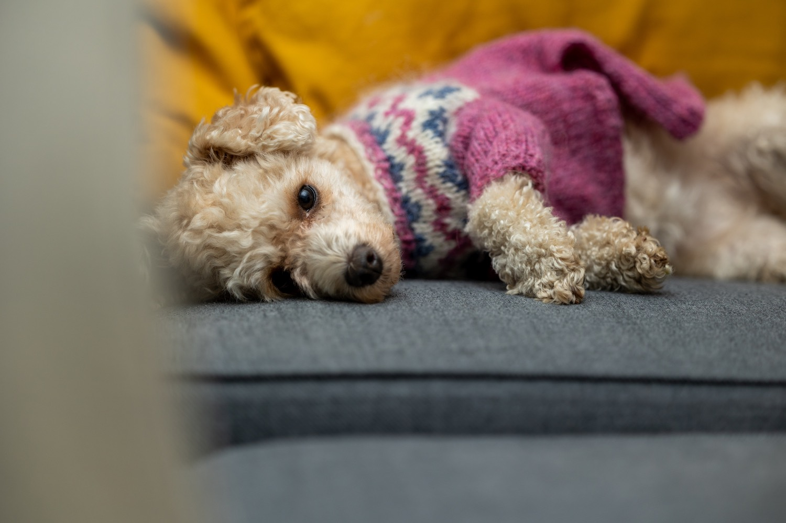
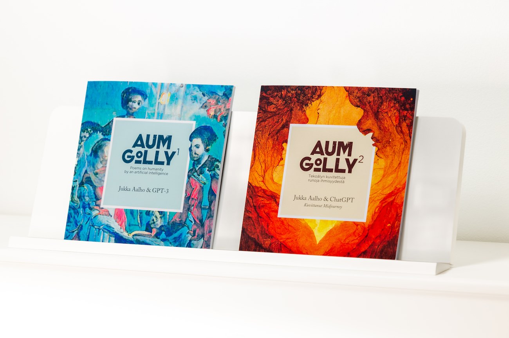

Keitä ovat me Aalhot

Essi ja Jukka Aalho ovat oululaisia luovia tekijöitä – kirjoittajia, podcastaajia ja luovien sisältöjen ammattilaisia.
Essi Aalho
Essi Aalho on oululainen kirjoittaja, copywriter ja podcastaaja. Essin supervoima on vaikeiden asioiden muotoilu yksinkertaisiksi ja vaikuttaviksi.
Jukka Aalho
Jukka Aalho (s. 1986) on oululainen kirjailija, podcastaaja ja luovan tarinankerronnan yrittäjä. Jukan esikoisromaani on Sivutieromaani (Basam Books, 2023). Aiemmin häneltä on ilmestynyt Aum Golly -tekoälyrunokirjasarja.
Curricula vitae
Essi Aalho
Essi on työskennellyt markkinoinnin ja kirjoittamisen parissa jo vuosia. Koulutukseltaan hän on filosofian maisteri suomen kielessä.
Katso Essin CV ja palkinnot
Jukka Aalho
Markkinoinnin urallaan Jukka on ollut luomassa kansainvälistä kasvua mm. Polarilla ja Ouralla. Hän on TEDx-puhuja, kouluttaja ja konsultti, joka edistää hyviä asioita hyviä yrityksiä auttamalla.
Katso Jukan CV ja palkinnot
Kertojan ääni -podcast
Kertojan äänessä sukellamme tarinoiden nurjalle puolelle. Vuodesta 2016 julkaistu podcast on Suomen vanhin kirjoittamiseen, kirjallisuuteen ja tarinoihin keskittyvä podcast. Vieraina on ollut kirjailijoita, kirja-alan päättäjiä ja vaikuttajia.
Käy Kertojan äänen sivuilla
Kuuntele uusimmat jaksot
Julkaisut

Aalhojen biografiaan kuuluu kirjoja, novelleja ja äänitarinoita.
Jukka Aalho
Sivutieromaani (2023, Basam Books)
Aum Golly 2 – tekoälyn kuvitettuja runoja ihmisyydestä (2023, Kertojan ääni)
Aum Golly – tekoälyn runoja ihmisyydestä (2021, Basam Books)
Hyvien asioiden tarinoita (Kertojan ääni, 2021–)
Essi Aalho
Kesäkolli, novelli antologiassa Mökillä (Maahenki 2017)
Pyykkipäivä, äänimaisema Muuttuvat suomalaiset äänimaisemat -kirjassa (Tampere University Press 2017)
Muutto, novelli antologiassa Novellit 2016 (Gummerus 2016)
Ota yhteyttä
Meihän saat parhaiten yhteyden sähköpostilla. Meille molemmille posti tulee perille osoitteeseen me@kertojanaani.fi.
Jukka Aalhon yhteystiedot
jukka@aalho.fi
p. 050 590 7703
Essi Aalhon yhteystiedot
essi@aalho.fi